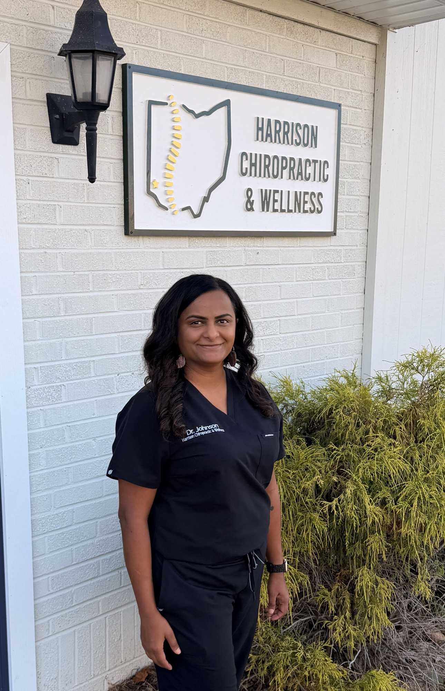

Doctor of Chiropractic
Dr. Saniya Johnson, DC, CACCP
Originally from Hyderabad, India, Dr. Johnson spent much of her childhood in San Antonio and Memphis. She earned a psychology degree from the University of Tennessee and her Doctor of Chiropractic degree from Life University in 2017. With an interest in children, she pursued training in pregnancy and pediatric chiropractic, became Webster technique certified, completed more than 200 hours of prenatal and pediatric courses through ICPA, and earned her CACCP certification in 2022. She also completed dry needling certification.